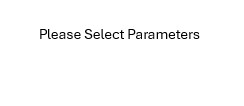

Show outcomes near first TBA as a function of metabolic and other parameters
Select X axis parameter (Metabolic, etc):
Adiponectin near first TBA
Adiponectin % Change from baseline near first TBA
Alkaline Phosphatase near first TBA
Alkaline Phosphatase % Change from baseline near first TBA
Amylase near first TBA
Amylase % Change from baseline near first TBA
Creatinine near first TBA
Creatinine % Change from baseline near first TBA
Glucose near first TBA
Glucose % Change from baseline near first TBA
HbA1c near first TBA
HbA1c % Change from baseline near first TBA
HDL Cholesterol near first TBA
HDL Cholesterol % Change from baseline near first TBA
IL-5 near first TBA
IL-5 % Change from baseline near first TBA
IL-10 near first TBA
IL-10 % Change from baseline near first TBA
Insulin near first TBA
Insulin % Change from baseline near first TBA
LAR near first TBA
LAR % Change from baseline near first TBA
LDL Cholesterol near first TBA
LDL Cholesterol % Change from baseline near first TBA
Leptin near first TBA
Leptin % Change from baseline near first TBA
Total_Cholesterol near first TBA
Total_Cholesterol % Change from baseline near first TBA
Triglycerides near first TBA
Triglycerides % Change from baseline near first TBA
Weight near first TBA
Weight % Change from baseline near first TBA
Select Y axis parameter (Outcomes):
Swimmers duration of treatment (weeks, all patients)
Swimmers duration of treatment (weeks, patient off study )
Percent Change Sum of Diameters at first TBA
Sum of diameters at first TBA
Bone Only or everyone?
Bone Only
Everyone
Cohort?
All patients
Capivasertib (all)
Capivasertib 49
Capivasertib 36
Alpelisib 36
